验收对比 · 第三轮：手机、桌面铜器、分界线
每张图可以左右拖动。分界线左边是改之前的线上版本，右边是现在的 index.html（还没有提交，也没有发布）。
先看这段 30 秒的手机录屏（新版）
白色圆点是手指的位置（只是录屏时加的标记，页面里没有）。按顺序发生的事：
- 图画完以后，分界线自己向左、向右各滑一小段，让人一眼看懂“这条线能拉”。
- 手指捏住纸张下边缘的黄铜滑块左右拖；线两边用红粉笔写着“ink / timber”。
- 把滑块推到纸边，整张变成实木；在滑块上连点两下，线回到正中。
- 在纸上拖动是转动机器。手指即使正好落在线上，也不会误抓到线。
- 点一下左下角的摇柄，机器停住；用手转两下；再点一下，机器重新自己走。
- 点零件，批注横着写在机器下方；点空白处收起。
- 拉右下角的铜尺，机器拆开，零件名字排在纸的两侧页边。
- 把镜子拖到反写的字上。
1. 手机竖屏：打开第一眼
旧版：机翼两头被纸边切掉，镜子压在标题和字上，下面两排铜器盖住纸的下半截，分界线的把手悬在画面中间。新版：机器换成斜侧面，两只翅膀都在纸里；铜器只剩摇柄和铜尺，放在纸下面的桌面上；镜子和反写的字移到纸的下半部分；分界线的滑块夹在纸的下边缘。
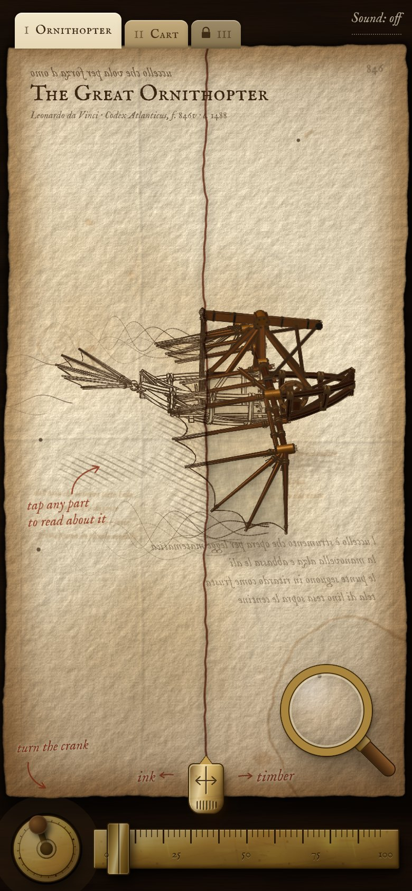
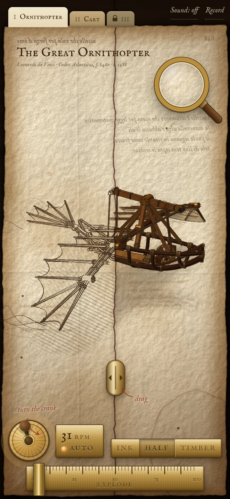
旧版新版2. 手机竖屏：点零件看批注
旧版批注只有不到半张纸宽，挤在零件旁边。新版横着写满一行宽，放在机器下方，原来在那里的反写字会先淡出让位。
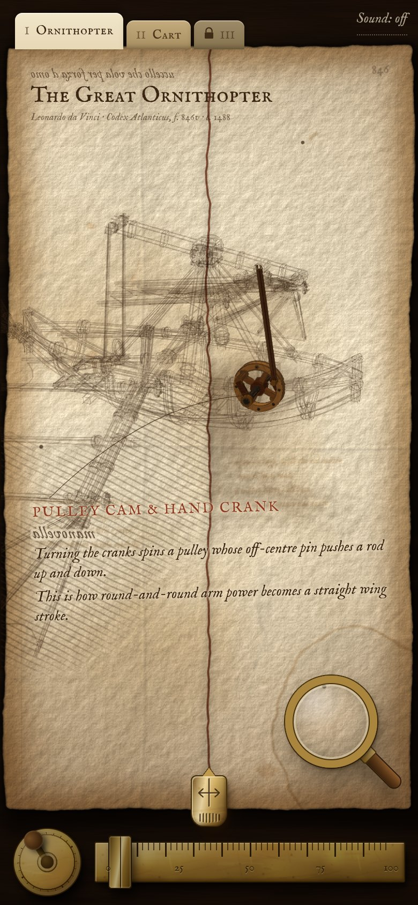
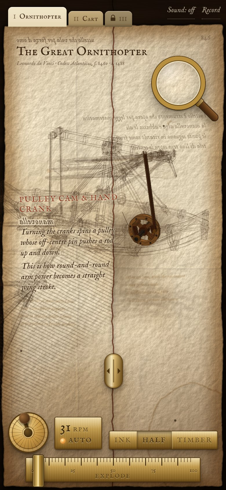
旧版新版3. 手机竖屏：拆开
旧版零件和名字从纸的左右两边跑出去，名字互相压住。新版镜头退远一点，名字改成沿左右页边排成两列，用引线连到零件。
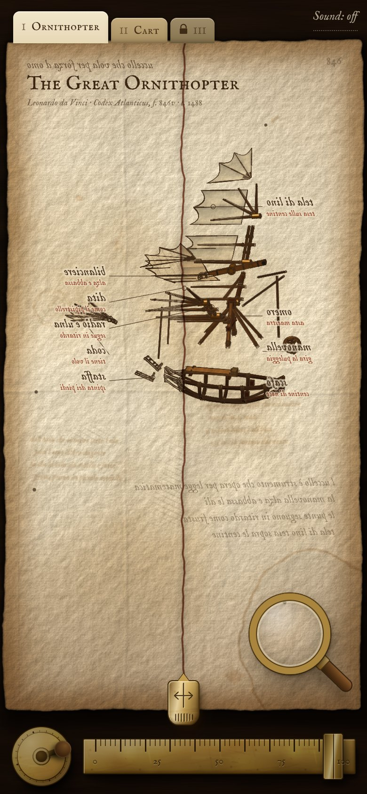
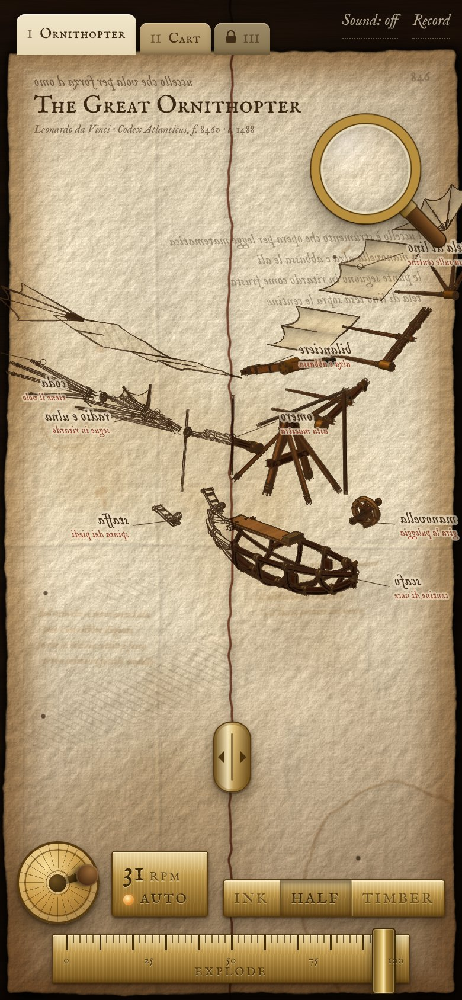
旧版新版4. 手机竖屏：自走车
旧版左边的大轮子有一半在纸外。新版整辆车都在纸里。
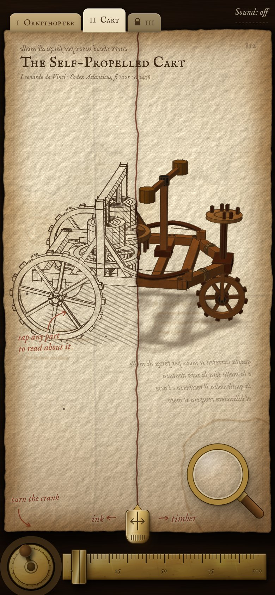
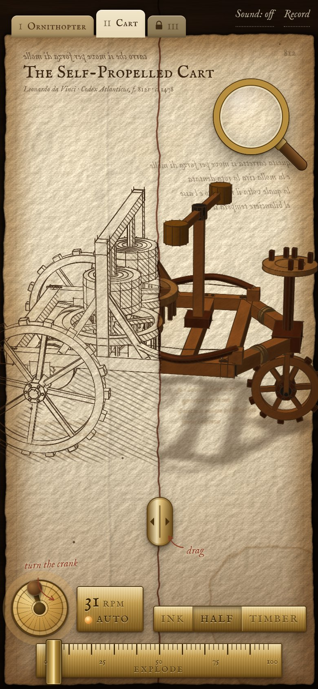
旧版新版5. 手机横屏
旧版铜器占掉下面三分之一，镜子很大。新版铜器缩小，放到纸外。
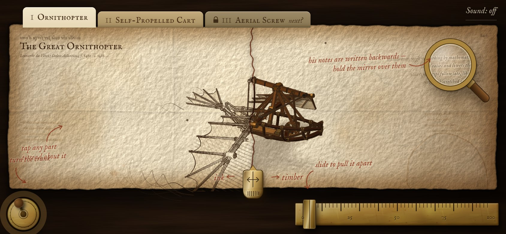
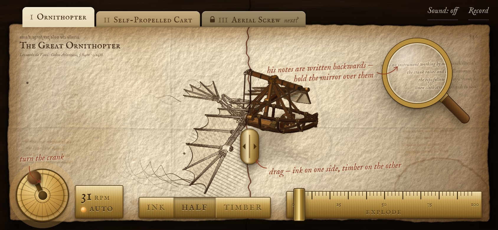
旧版新版6. 电脑：打开第一眼
旧版四件铜器在纸的下方排成一排，像一条工具栏，而且比周围的纸亮很多。新版只留摇柄（左下）和铜尺（右下），躺在纸外面的桌面上；铜的颜色改成旧黄铜，带斑驳和划痕，亮度跟着烛光一起往角落变暗，影子朝右下方（和纸的影子同一个方向）。分界线的滑块在纸的下边缘，不再碰到机器。
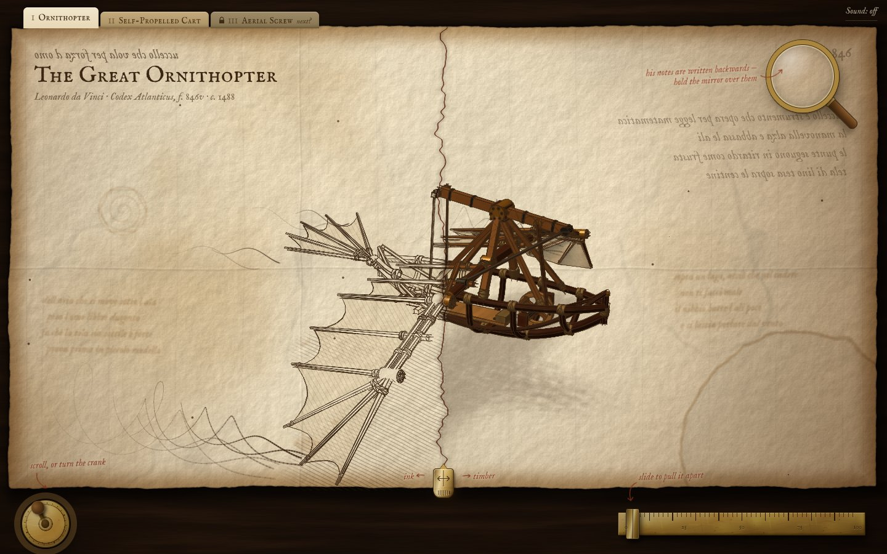
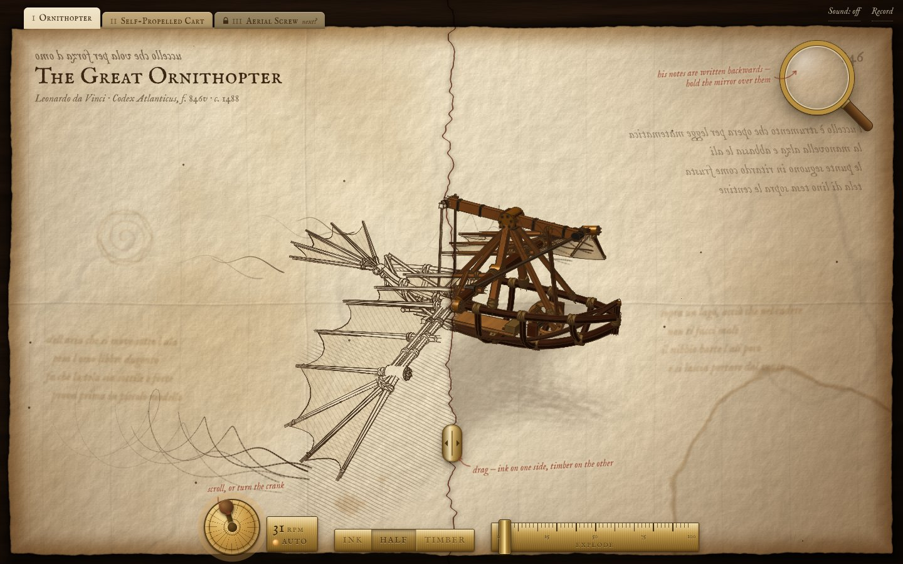
旧版新版7. 电脑：拆开
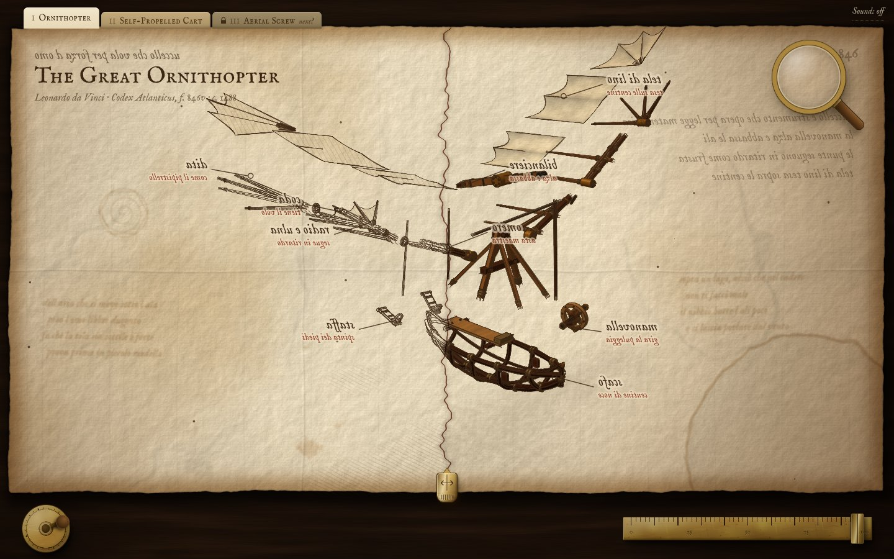
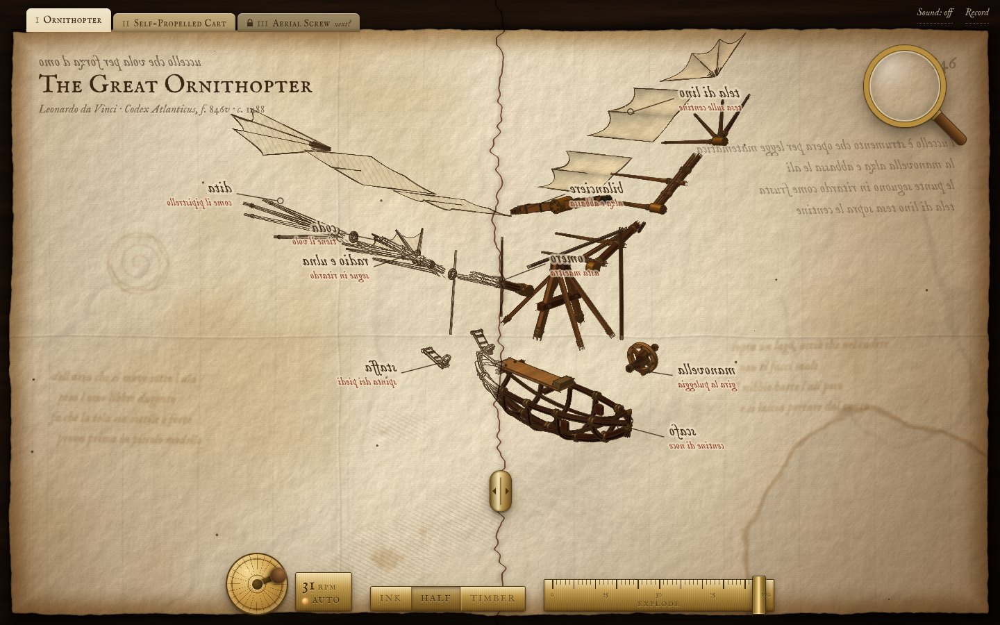
旧版新版8. 电脑：点零件看批注
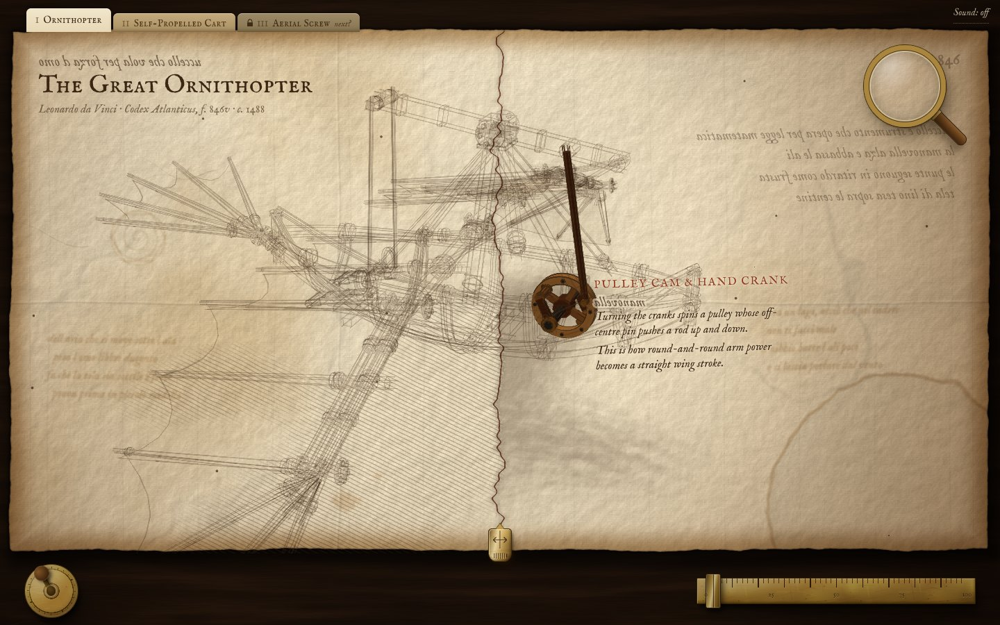
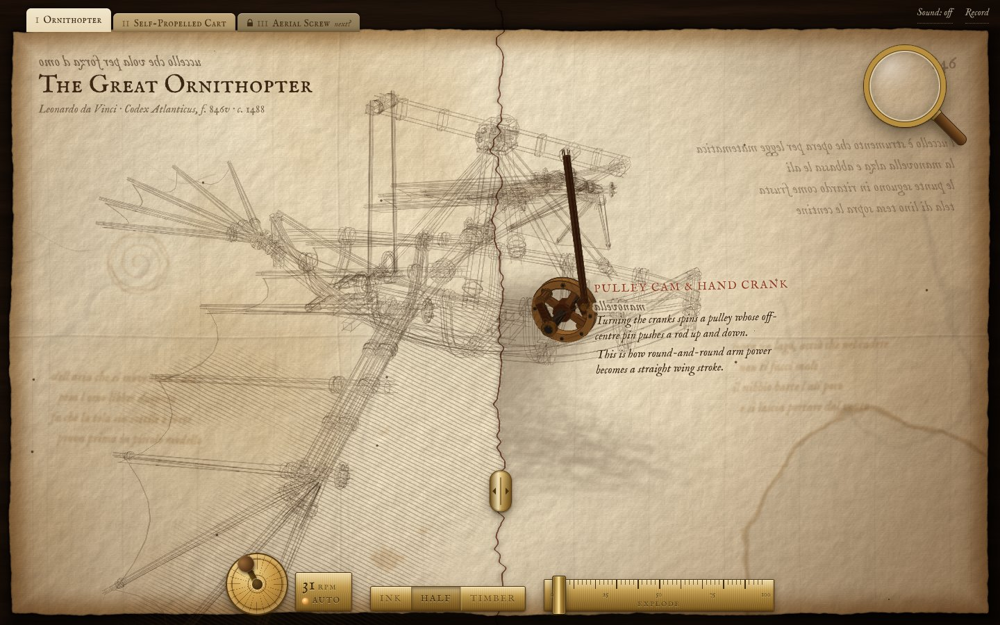
旧版新版9. 作者工具：网址后面加 #maker=1 才出现
访客看不到 Record、转速牌、INK / HALF / TIMBER 牌，也按不出录制抽屉和干净画面。网址加 #maker=1 后全部回来（#maker=0 再藏起来，不会记在浏览器里）。原来的录制网址，例如 #mode=cine&preset=viral&t=9.6、#ar=9:16&clean=1，会自动带出作者工具，用法不变。
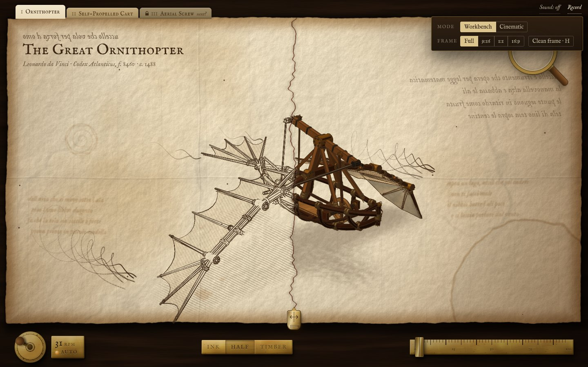
- 鼠标移到分界线上：线会变粗，滑块微微抬起，两边出现“ink / timber”。
- 真手机上的手感：滑块好不好捏，摇柄好不好转，铜尺好不好拉。我只在电脑上模拟了触摸，没有在真机和 Safari 上试过。
- 摇柄“点一下停、再点一下走”是新加的，看你觉得自然不自然。